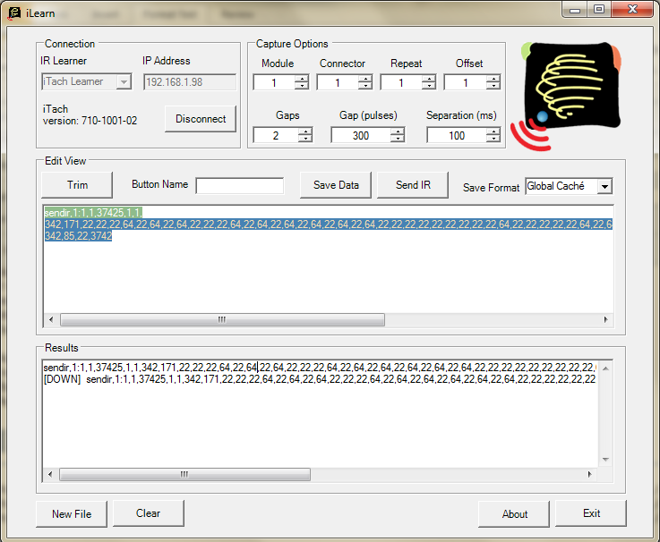

|
This page last changed on Jan 29, 2011 by jbremote.
Newbie alert here. I just got my first IR sent with Open Remote running on iPhone with my Global Cache WF2IR iTach (pressing DOWN on my Apple Remote to control Plex on my MAC Mini). Maybe all this is obvious to some but it took me some research so maybe others will find this helpful and hopefully we can continue this thread on your experiences using WF2IR with OpenRemote.
I started out checking the Navigation Tutorial video to figure out the basics to create some buttons. Then go into designer and Building Modeler and choose New -> New Device and name it whatever you like. Then select it and choose New -> New Command. Choose TCP/IP protocol and set the name to the command, I called it "MAC Mini Down". IP-address is the IP of your WF2IR and the Port is 4998.
Then the complicated part, Command, which is not very obvious. For some more technical details, check this thread. But for me it turned out to be:
sendir,1:1,1,37425,1,1,342,171,22,22,22,64,22,64,22,64,22,22,22,64,22,64,22,64,22,64,22,64,22,64,22,22,22,22,22,22,22,22,22,64,22,22,22,22,22,64,22,64,22,22,22,22,22,22,22,22,22,64,22,22,22,64,22,22,22,64,22,22,22,22,22,22,22,1498,342,85,22,3742
Where the number of the colon (in above example 1 in red) is the output port of the WF2IR which is 1, 2 or 3.
Now how did I figure out the rest? Well, I used ILearn.exe, choosed iTach Learner in the dropbox, put the IP of the iTach and choosed Connect. Then I pointed my Apple Remote towards the iTach and pressed DOWN. I put "DOWN" in the Button Name and pressed Save Data. Keep on doing that for all your commands. 
Then some, probably obvious, stuff. Don't forget to save in Designer, Sync with modeler from your controller and kill the OpenRemote on your iPhone and restart it and it will reload the config.
|
Is there any way that a single command can be sent to all 3 outputs at once in OR?
For example I have the code:
(sendir,1:1,1,)37993,(1,1,)124,390,19,171,18,171,19,171,19,85,19,171,19,85,19,86,19,86,19,85,19,86,19,86,18,86,19,86,19,85,19,86,19,171,19,1170,43,385,1,3332,35,3799
In the Elve software I input that code without the data inside the ( ), 37993,124,390,19,171,18,171,19,171,19,85,19,171,19,85,19,86,19,86,19,85,19,86,19,86,18,86,19,86,19,85,19,86,19,171,19,1170,43,385,1,3332,35,3799
and somehow it sends that command out to all 3 connectors.
I'm about to rearrange my home theater setup and add some new components and it is a huge pain to re-edit every single command's sendir,1:x,1,

Posted by crossbred900 at Jun 14, 2013 18:57
|
|
I guess the easiest way to send 3 commands at once is make simple macro and add the macro to the command.
Posted by dclaeys at Jun 15, 2013 07:32
|
|
I don't really want 3 commands at once, just one commands sent out to three outputs. To make a macro I would have to enter every command three times and then a macro to join them for every button on my remotes, that is hundreds of commands. I was just wondering if that was something that the iTach could be told to do, or that Elve Home Automation did by it itself. I'll just have to try and plan out more carefully where everything will go before I edit all the commands again.
Posted by crossbred900 at Jun 15, 2013 18:31
|
|
According to the API description(s) on the GlobalCache site, this cannot be done. Which goes for all the models.
Have you considered changing the hardware, so that one channel will command several devices? Possibly you can be creative with cheap diodes (1n4148 or the like).
Posted by barf at Jun 15, 2013 19:25
|
|
It's not a huge deal, I just figured I could save a few steps down the road if OR could do it. That's something I really liked about Elve but, the facts that they don't have Z-stick support and there's been no reply to a question I posted on May 29th, I can't justify paying $99 to hope support is added or somebody replies when I need help. I much rather have to take a few extra steps or try to learn something unfamiliar to me (rules language) and have a growing community to rely on, than have convenience in some areas and be left on my own.
Posted by crossbred900 at Jun 16, 2013 20:58
|
|
{kind=link}